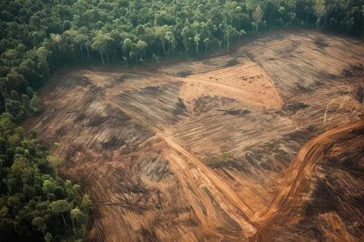
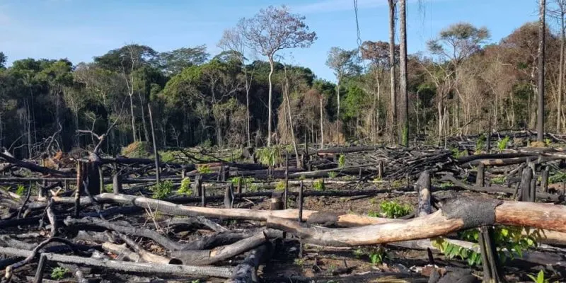
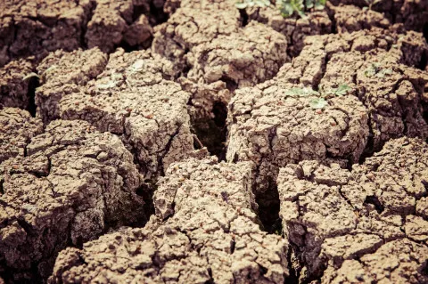

La deforestación y erosión de los suelos, sus causas y consecuencias
Definición de la Deforestación
La deforestación es la destrucción de bosques nativos como consecuencia de la acción humana. Se produce principalmente con el objetivo de obtener insumos para las industrias maderera y papelera, para expandir las áreas urbanas o bien para destinar terrenos a la práctica de la agricultura o la ganadería.

Causas de la Deforestación
Entre las principales causas de la deforestación se encuentran:
El desarrollo de las ciudades
Las ciudades crecen a medida que su población aumenta y se requiere de nuevo espacio para construir viviendas y obras viales.
La expansión de la actividad agrícola y ganadera
El aumento de la población mundial conlleva la necesidad de producir más alimentos, de manera que se requieren más superficies cultivables.
La explotación maderera
Las industrias de la madera y el papel, entre otros derivados de los árboles, se abastecen de grandes superficies de bosques.
Consecuencias de la deforestación

La deforestación desencadena una serie de consecuencias devastadoras para el planeta, comenzando por la drástica pérdida de biodiversidad debido a la destrucción de hábitats naturales y la extinción de numerosas especies. Además, al eliminar los árboles, se libera a la atmósfera el dióxido de carbono que estos almacenaban, lo que acelera el cambio climático y el calentamiento global. Este proceso también degrada la calidad del suelo, provocando erosión y desertificación, al mismo tiempo que altera los ciclos hidrológicos, lo que resulta en sequías más severas e inundaciones. Finalmente, impacta directamente a las comunidades indígenas y locales que dependen de estos ecosistemas para su subsistencia, perpetuando un grave desequilibrio tanto ambiental como social.

Bibliografía
Concepto Imagen1 Imagen2 Imagen3